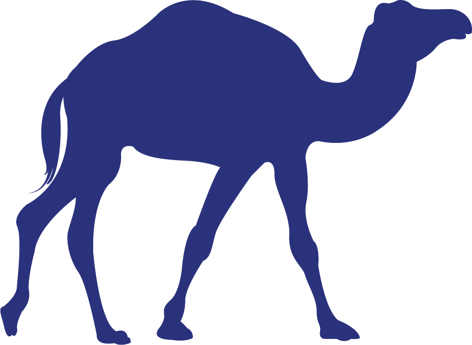
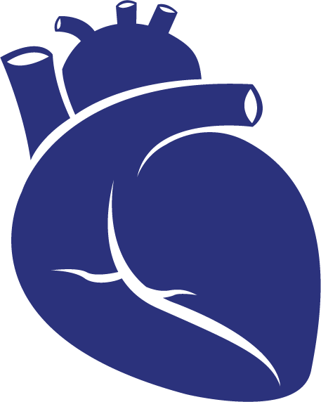
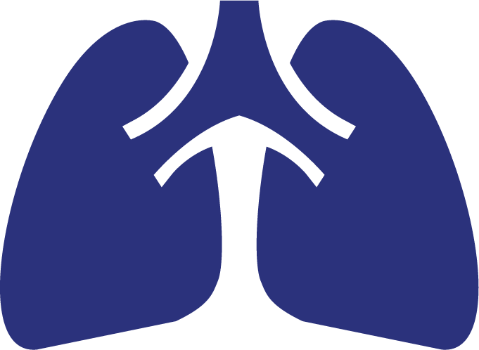
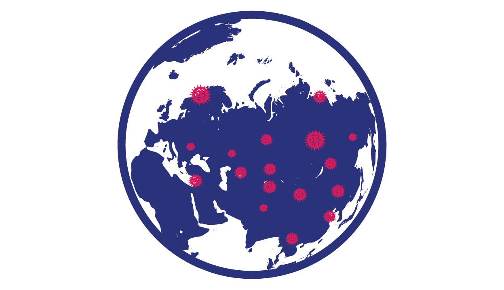

Mengenal Virus Corona
Apa Itu Virus Corona?
Istilah virus corona merujuk pada virus yang sering ditemukan menginfeksi binatang dan bisa menyebar ke manusia.
Virus corona yang saat ini mewabah (SARS-CoV-2) dan menyebabkan penyakit COVID-19 merupakan jenis virus corona ke-7 yang menginfeksi manusia.
Virus Corona yang menyerang manusia baru ditemukan pada 1960-an.
Bagaimana Virus Corona Menyebar?


Dalam kasus MERS, ditularkan dari unta ke manusia.
Dalam kasus SARS, ditularkan dari musang ke manusia.
Dalam kasus COVID-19, diduga ditularkan dari ular dan kelelawar.
Penularan dari manusia ke manusia lewat droplet (partikel air liur) ketika penderita bersin atau batuk.
Berapa Lama Inkubasi Corona?
2-14
Masa inkubasi virus corona adalah 2-14 hari.
Masa inkubasi adalah saat pasien pertama kali tertular/terpapar virus, hingga menunjukkan gejala awal.
Siapa yang Paling Berisiko Terkena Corona?
Lansia berusia 70 tahun ke atas.

Orang yang memiliki riwayat penyakit lain seperti diabetes atau sakit jantung.

Orang yang memiliki riwayat penyakit pneumonia/sakit pernapasan.
Apa Sudah Ada yang Sembuh dari Corona?
Hingga awal Maret, lebih dari 68 ribu orang dari total 126 ribu lebih penderita, sudah dinyatakan sembuh.
Jumlah pasien sembuh bertambah setiap harinya.
WHO menyatakan 80 persen pasien sembuh tanpa membutuhkan perawatan khusus.
Apa Sudah Ada Obat atau Vaksinnya?
Belum ada vaksin atau pengobatan spesifik.
Namun, gejala yang disebabkan virus dapat diobati.
Pengobatan harus didasarkan pada kondisi klinis pasien.
Apa Itu Pandemi?
Pada Kamis (12/3), WHO menyatakan Covid-19 sebagai pandemi atau wabah yang meluas ke berbagai negara. Kriteria umum penetapan pandemi adalah:

Virus menyebabkan kematian.
Penularan virus dari orang ke orang terus berlanjut tak terkendali.
